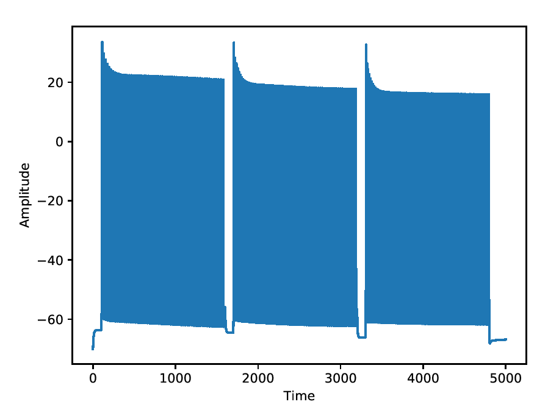
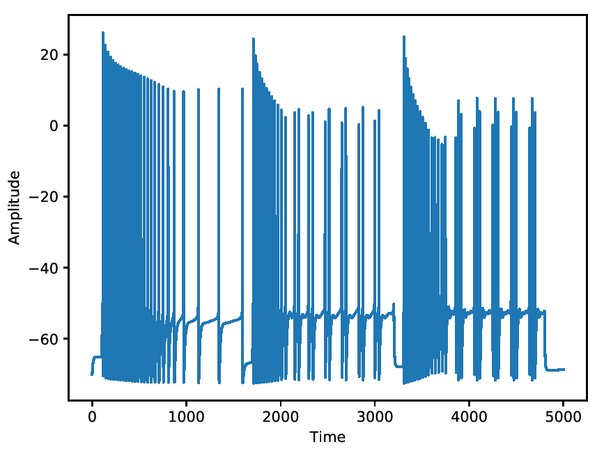
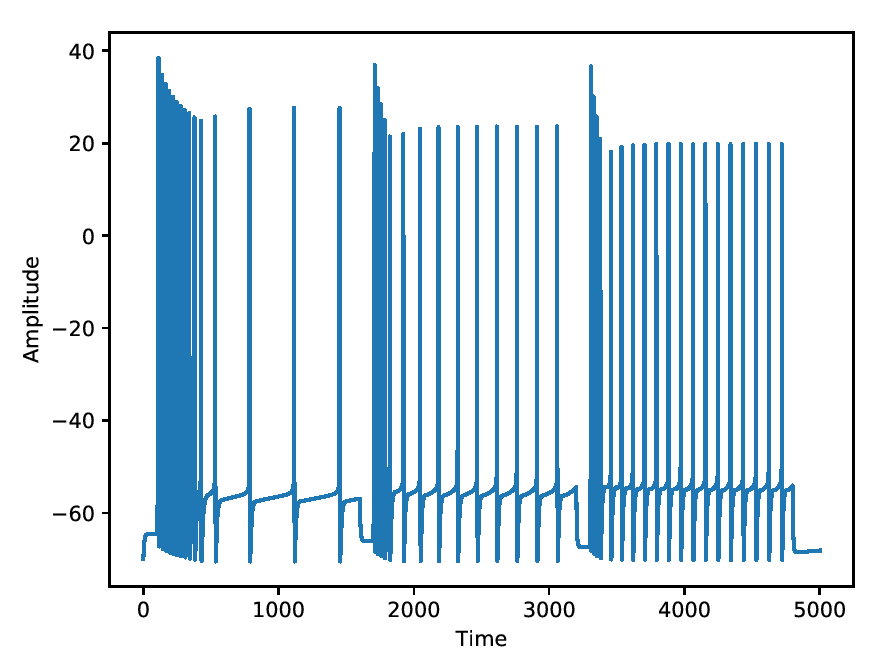
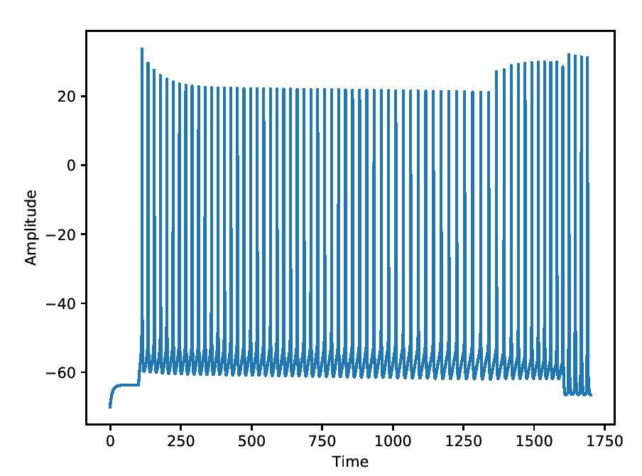

This is the README for the Cerebellar granule cell models code for the paper: "Parameter tuning differentiates granule cell subtypes enriching transmission properties at the cerebellum input stage" Stefano Masoli, Marialuisa Tognolina, Umberto Laforenza, Francesco Moccia, Egidio D’Angelo (2020). Nature comunication, 8 May 2020, 3:222. https://doi.org/10.1038/s42003-020-0953-x Implementation done by Stefano Masoli in Python/Neuron. Stefano.masoli@unipv.it Abstract The cerebellar granule cells (GrCs) are classically described as a homogeneous neuronal population discharging regularly without adaptation. We show that GrCs in fact generate diverse response patterns to current injection and synaptic activation, ranging from adaptation to acceleration of firing. Adaptation was predicted by parameter optimization in detailed computational models based on available knowledge on GrC ionic channels. The models also predicted that acceleration required additional mechanisms. We found that yet unrecognized TRPM4 currents specifically accounted for firing acceleration and that adapting GrCs outperformed accelerating GrCs in transmitting high-frequency mossy fiber (MF) bursts over a background discharge. This implied that GrC subtypes identified by their electroresponsiveness corresponded to specific neurotransmitter release probability values. Simulations showed that fine-tuning of pre- and post-synaptic parameters generated effective MF-GrC transmission channels, which could enrich the processing of input spike patterns and enhance spatio-temporal recoding at the cerebellar input stage. Requirement: The models used in the paper were simulated with Python2.7 and NEURON 7.6 The code runs with Python3.6 and NEURON7.8 too. The model uses NEURON multisplit to distribute automatically the calculation on all the available cores. The maximum number of cores that can be used by the models is 8. - Update 10 November 2022 The sodium channels and the calcium buffer were modified to by compliant with the upcoming NEURON 9. -> These modifications do not change the physiological results. Usage instructions: Download and extract the archive. Under Linux/Unix: Change directory to "Granule_cell_2020" folder. Each model type is contained into specific directories. 01_GrC_2020_regular - Regular firing granule cell 02_GrC_2020_mild_adapting - Mild adapting granule cell 03_GrC_2020_adapting - Adapting granule cell 04_GrC_2020_accelerating - Accelerating granule cell In each directory, run nrnivmodl ./mod_files to compile the mod files. Each model is provided with 2 protocols to reproduce three current injections and the synaptic activity shown in the paper: Run nrngui -python /protocols/01_currents_injection Run nrngui -python /protocols/02_synaptic_background The first protocol reproduces the three positive current injections. The second protocol reproduces the excitatory synaptic background and burst responses at different frequencies. The number of synapses, types, bursts frequency, dendritic location and currents can be modified into the protocol itself. The following screenshot are generated by the first protocol: Regular firing  Mild adapting  Adapting  Accelerating  Attention: The model does not work with variable time step! Not tested under NEURON for windows or MAC OS. If you would like more help please refer to: https://senselab.med.yale.edu/ModelDB/NEURON_DwnldGuide.cshtml Additional resources Experimental data avaible on the Human Brain Project (HBP) Knowledge graph. https://www.humanbrainproject.eu/en/explore-the-brain/search/ A Live Paper can be found on the HBP Brain Simulation Platform. https://collab.humanbrainproject.eu/#/collab/1655/nav/306845